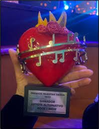
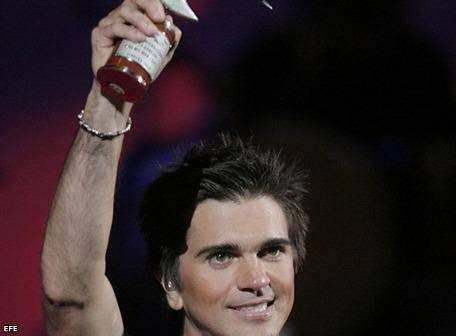

|
Según su sello discográfico, universal music, Juanes ha sido galardonado, entre otros, con 26 premios grammys latinos (5 en los premios grammy latino de 2003 y 5 en los premios grammy latino del 2008), 4 grammy, 11 Premios MTV, 2 NRJ music awards 9 premios lo nuestro, 12 premios nuestra tierra, los máximos galardones posibles en el festival internacional de la cancion viña del mar. |
|---|
|  |  |